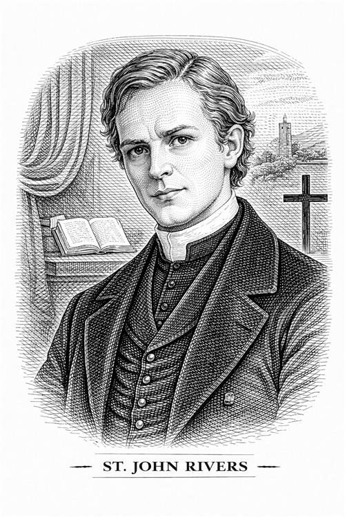

John Rivers

John Rivers es uno de los personajes más importantes en la última parte. Representa un modelo de vida completamente distinto al de Jane y funciona como un contraste moral y emocional con Edward Rochester.
Es un joven clérigo anglicano serio, disciplinado y extremadamente racional. Jane lo conoce después de huir de Thornfield. Él y sus hermanas la acogen cuando está sin dinero ni hogar.
Personalidad e impacto en la vida de Jane
John es un hombre de fuertes convicciones morales y religiosas. Cree firmemente en el deber, el sacrificio y el servicio a los demás. Su vida está dedicada a la misión y a la enseñanza, y espera lo mismo de quienes lo rodean.
Ha decidido anular todos sus sentimientos humanos (incluido su amor por Rosamond Oliver) para dedicarse por completo a su misión como misionero en la India. Su moral es implacable y utilitaria: no busca la felicidad, sino el deber y la gloria divina. Es un hombre que desprecia las "debilidades" del corazón y cree que la vida en la tierra es solo un campo de batalla para ganar el cielo.
Jane lo describe como un hombre de una belleza clásica y perfecta, pero, a diferencia de sus hermanas, con una expresión que rara vez muestra calidez humana.
Es a la vez el salvador y el opresor de Jane: por un lado, le salva la vida al acogerla en su casa; pero por otro, intenta conquistar su alma. Le da un hogar y un trabajo como maestra, pero luego intenta obligarla a casarse con él para llevarla a la India.
Como hemos dicho, él está enamorado de Rosamond, pero como el amor no encaja con su misión religiosa y su sentido del deber, prefiere proponerle matrimonio a Jane, y no por amor sino por conveniencia. La ve una "herramienta" útil para su misión. Su propuesta es el momento más peligroso para la autonomía de Jane.
La presión que ejerce sobre su prima es lo que hace que Jane, en medio de una crisis espiritual, escuche la voz de Rochester llamándola.
Importancia del personaje
Si Brocklehurst representaba la religión hipócrita, St. John representa la religión dogmática y sin corazón. Brontë lo presenta con respeto (no es un villano barato, es un hombre realmente entregado a su fe), pero también con horror. A través de él, la autora defiende que una vida sin amor y sin libertad individual no es verdadera virtud. Es el tipo de hombre que "puede morir por una causa, pero no puede vivir para una persona".
Este personaje es una prueba moral para Jane, ya que debe decidir entre una vida segura pero sin amor, o ser fiel a sí misma. John Rivers representa la alternativa vital que Jane rechaza.
También representa el intelecto y la voluntad llevados al extremo donde se vuelven inhumanos. Su final en la novela (muriendo solo en la India, feliz por su sacrificio) cierra el libro.